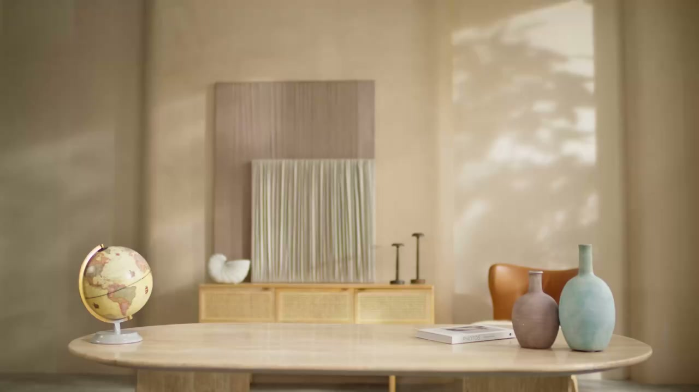
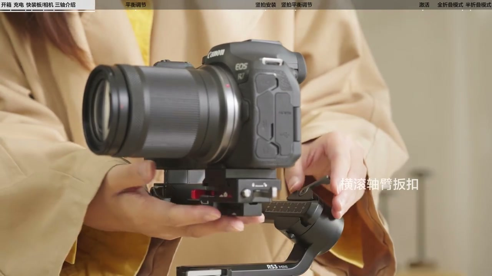
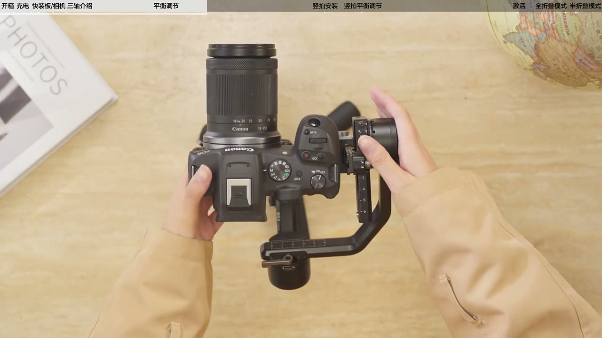
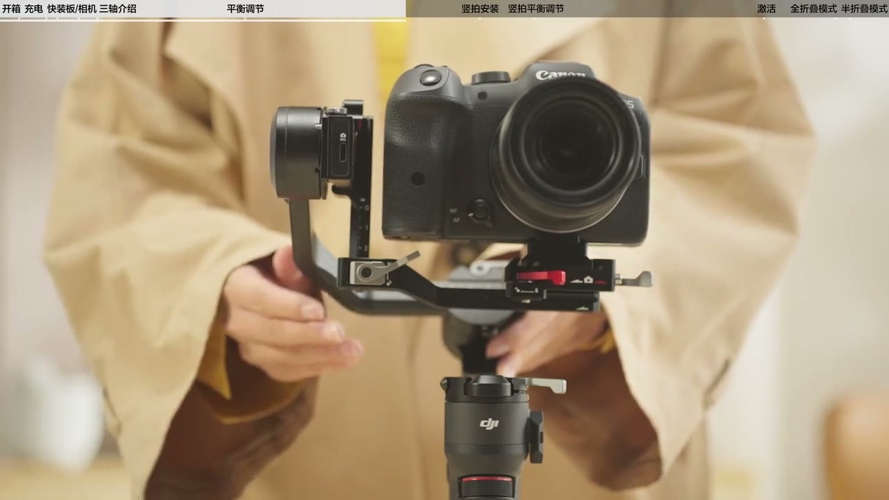
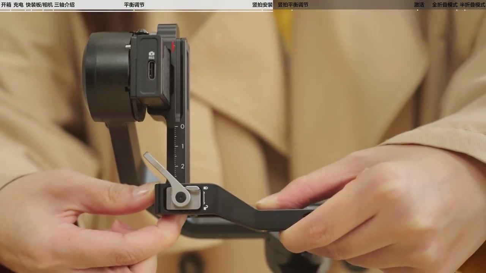
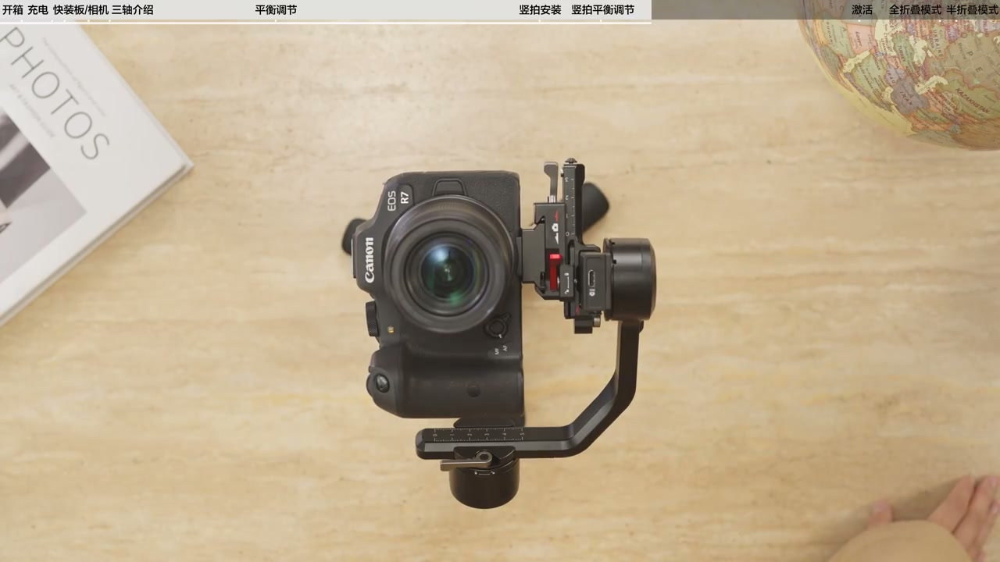
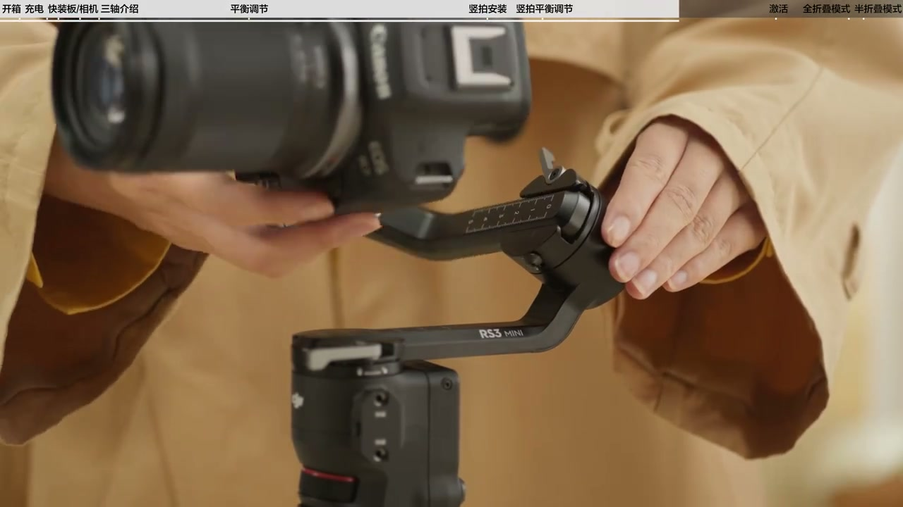
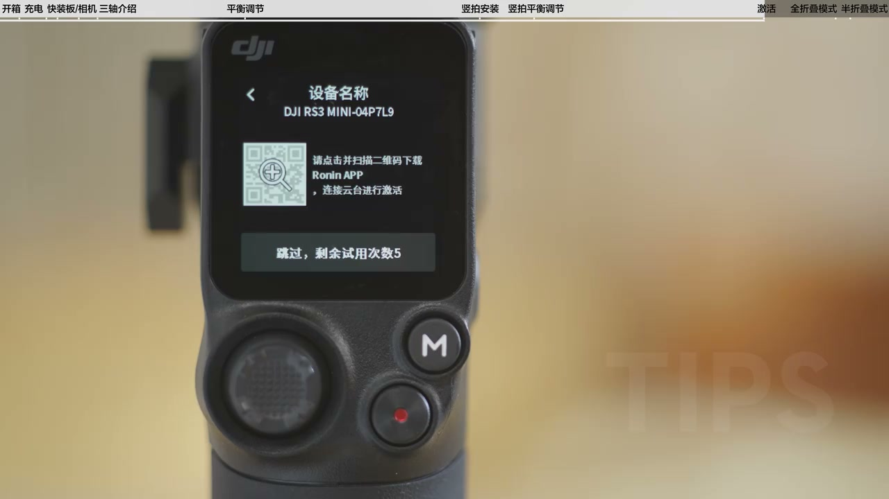

01
中文
欢迎您收看大疆RS 3 mini教学视频。
EN
Welcome to the DJI RS 3 Mini tutorial.
表达提示Official tutorial.

Scene English · 器材 · 稳定器教学
A Must-Have for Beginners! DJI RS 3 Mini First-Use Tutorial
🎧 语音讲解
Opening: This video covers the DJI RS 3 Mi…
情境官方教学视频的总览。
欢迎您收看大疆RS 3 mini教学视频。
Welcome to the DJI RS 3 Mini tutorial.
表达提示Official tutorial.
本视频将为您介绍包装清单、首次使用、平衡调节、激活、开始使用及收纳。
This video covers the package contents, first use, balancing, activation, operation, and storage.
表达提示What we'll cover.
Official tutorial.
What we'll cover.

Package and setup: the box holds the gimba…
情境开箱与基础充电。
RS 3 mini包装内包含云台主体、三角架、USB-C弯头相机控制线、USB-C线、快装板和螺丝套装。
The RS 3 Mini package includes the gimbal body, tripod, USB-C angled camera control cable, USB-C cable, quick-release plate, and screw set.
表达提示What's in the box.
将三角架安装至云台底部。
Attach the tripod to the bottom of the gimbal.
表达提示Tripod first.
推荐使用5伏2安的USB充电器，连接USB-C线给稳定器充电。
Use a 5V 2A USB charger and connect the USB-C cable to charge the gimbal.
表达提示5V 2A to charge.
What's in the box.
Tripod first.

Mount the camera: press the upper plate's …
情境快装板正确安装是平衡的前提。
将上层快装板的挡边内壁与相机前端贴住后锁紧螺丝。
Press the upper plate's lip against the camera front and tighten the screw.
表达提示Align the plate.
如果相机前端对齐后无法锁紧螺丝，请将快装板调转180度。
If you can't tighten after aligning, flip the plate 180 degrees.
表达提示Flip if misaligned.
解锁下层快装板上的板扣，按住安全锁，将相机连同上层快装板滑入下层快装板后锁紧板扣。
Unlock the lower plate's latch, press the safety lock, slide the camera with the upper plate in, and lock the latch.
表达提示Slide and lock.
Align the plate.
Flip if misaligned.

Know the three axes: the gimbal has the ti…
情境三轴结构与锁定的基础知识。
稳定器有三个轴，分别是俯仰轴、横滚轴和平移轴。
The gimbal has three axes: tilt, roll, and pan.
表达提示Three axes.
在运动过程中三个轴沿不同方向转动，用来抵消不同方向的抖动起到稳定的作用。
The three axes rotate in different directions to cancel shake and stabilize.
表达提示Cancel shake in all directions.
轴锁用来锁定轴臂，搬扣用来锁定轴臂位置。
Axis locks fix the arms, and latches lock their positions.
表达提示Locks and latches.
Three axes.
Locks and latches.

Tilt-axis balance: with the lens up, if it…
情境三轴平衡的核心判断方法。
翻轉相機使鏡頭垂直朝上，判斷相機重心朝向。
Flip the camera lens up and check which way the center of gravity leans.
表达提示Lens up, feel the tilt.
如果相機鏡頭朝前傾斜，則表明重心靠前，須向後移動橫臂。
If the lens tips forward, the weight is forward—move the arm back.
表达提示Move the arm opposite.
若相機鏡頭向上傾斜，須向前移動豎臂。
If the lens tips up, move the vertical arm forward.
表达提示Balance the vertical arm.
當相機在俯仰軸任意位置都能保持靜止不動，代表俯仰軸已完成平衡調節。
When the camera stays still at any tilt position, the tilt axis is balanced.
表达提示Still at any angle = balanced.
Lens up, feel the tilt.
Move the arm opposite.

Plate removal and rebalance: release the r…
情境换机时的快装板拆装与重新调平。
鬆開下層快裝板上的紅色板扣，按住安全鎖，向外推出並取下。
Release the red latch, press the safety lock, and push the lower plate out.
表达提示Remove the plate.
上面的紅色箭頭與豎臂上的紅色箭頭方向對齊，對準凹槽向下推入後鎖緊。
Align the red arrows with the arm's groove, push down, and lock.
表达提示Arrows align, push and lock.
將相機連同上层快裝板裝入下層快裝板。
Mount the camera with the upper plate back into the lower plate.
表达提示Remount the camera.
Remove the plate.
Remount the camera.

Activation: 5 trial uses before activation…
情境首次激活流程。
DJI RS 3 mini在激活前支持5次试用。
The RS 3 Mini supports 5 trial uses before activation.
表达提示5 free trials.
运行Ruin App点击连接设备后，选择DJI RS 3 mini，输入默认密码12345678。
Open the Ruin app, connect the device, select the RS 3 Mini, and enter the default password 12345678.
表达提示Default password 12345678.
如果你已购买或打算购买DJI Care服务，需要在激活30天内完成购买和绑定。
If you bought or plan to buy DJI Care, purchase and bind it within 30 days of activation.
表达提示DJI Care within 30 days.
同时长按M按键与扳机按键进行自动校准。
Hold the M button and trigger together for auto calibration.
表达提示Auto calibrate.
5 free trials.
DJI Care within 30 days.

Storage: half-fold pulls the roll axis to …
情境两种折叠模式应对不同场景。
半折叠模式可以将横滚轴收回至与平移轴约30度夹角处。
Half-fold brings the roll axis to about 30 degrees from the pan axis.
表达提示Half-fold for quick moves.
此时不需要取下相机和重新调节平衡，方便快速转场。
No camera removal or rebalancing needed—perfect for quick scene changes.
表达提示No rebalancing.
全折叠模式可以将横滚轴完全收回，然后取下竖臂，收纳至最小形态。
Full-fold tucks everything in and removes the arm for the smallest form.
表达提示Smallest for travel.
以方便旅行接拍出行携带。
Easy to carry for travel and on-location shoots.
表达提示Pack it up.
No rebalancing.
Smallest for travel.
说三轴名称
说俯仰轴平衡
说激活步骤
说折叠收纳
三轴都要调平，否则画面会抖。
快装板对不上就翻转180度。
俯仰、横滚、平移三轴都要平衡。
快速转场用半折叠，不用重新调平。